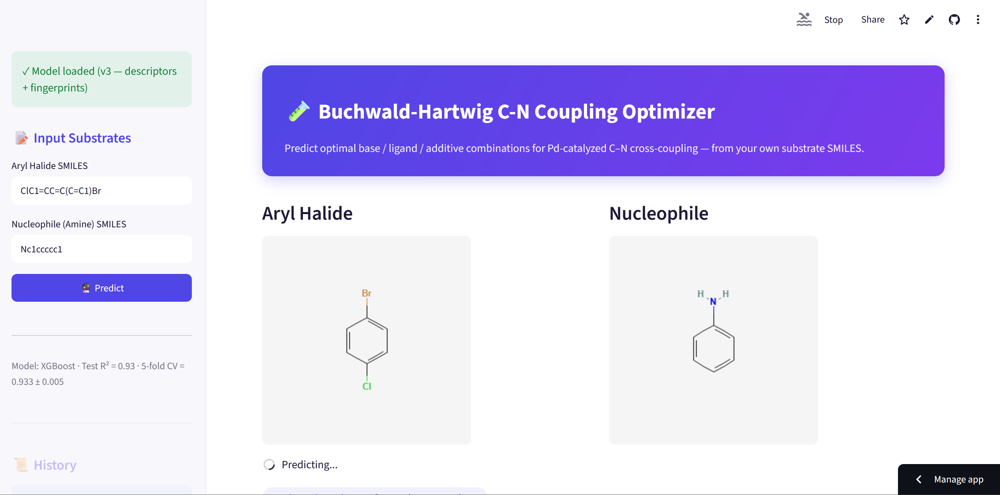
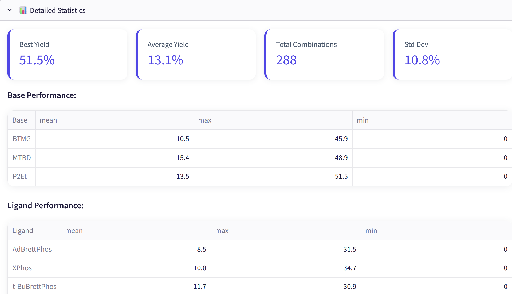

Buchwald-Hartwig C-N Coupling Optimizer
📈 Screenshots from the application:

Enter aryl halide and nucleophile SMILES; structures render automatically and the v3 model (XGBoost, R² = 0.93) is loaded and ready.
Yield statistics across all 288 base/ligand/additive combinations for the given substrates, plus a per-base and per-ligand performance breakdown.Overview
An interactive ML-powered web application that predicts optimal reaction conditions for Buchwald-Hartwig C-N cross-coupling reactions. Users input substrate SMILES strings and receive AI-generated recommendations for base, ligand, and additive combinations, with the coupling product generated automatically and its real molecular structure (descriptors + Morgan fingerprints) used in the prediction.
- 🚀 Live Demo - View Live App
- 📂 GitHub Repository - View on GitHub
Tech Stack
- Backend: Python, XGBoost, Scikit-learn, RDKit
- Frontend: Streamlit
- Data Processing: Pandas, NumPy
- Deployment: Streamlit Cloud
- Version Control: Git/GitHub
Key Features
✅ Real-time Predictions - Get top 10 reaction condition recommendations instantly, computed from the actual substrates entered
✅ Molecular Visualization - Auto-generate structure diagrams from SMILES (PubChem API)
✅ Detailed Analytics - Statistical breakdown of base/ligand performance
✅ Export Options - Download results as CSV or PDF reports with structures
✅ Prediction History - Track all past predictions in sidebar
✅ Interactive UI - Clean, responsive design with intuitive controls
Project Architecture
data/
├── doyle_buchwald_data_cleaned.csv # 4,312 training samples
├── X_features_scaled_v3.csv # Scaled/encoded feature matrix (327 features)
├── trained_models/
│ ├── best_model_v3.pkl # XGBoost model (Test R² = 0.93)
│ ├── scaler_v2.pkl # Feature scaler for the descriptor block
│ ├── feature_names_v2.pkl # Descriptor+categorical feature order (71)
│ └── feature_names_v3.pkl # Full feature order incl. fingerprints (327)
│
app.py # Streamlit application (feature engineering + inference)
How It Works
- Input: User provides SMILES for the aryl halide and the amine nucleophile
- Validation: SMILES syntax checking via RDKit
- Product generation: The coupling product is generated automatically from the two substrates using an RDKit reaction template (most-reactive-halide priority: I/Br over Cl)
- Feature Generation: Real molecular descriptors (MW, LogP, TPSA, aromaticity, H-bond donors/acceptors, etc.) and 128-bit Morgan fingerprints computed for both the aryl halide and the predicted product, combined with one-hot encoded base/ligand/additive identity — 327 features total
- Prediction: XGBoost model predicts yield for all 288 base × ligand × additive combinations, using the actual substrate structure
- Output: Top 10 recommendations sorted by predicted yield
- Export: Results downloadable as CSV or PDF with molecular structures
Model Performance
- Algorithm: XGBoost Regressor (also compared against Random Forest and Gradient Boosting)
- Training Samples: 4,312 reactions
- Features: 327 (physicochemical descriptors + Morgan fingerprints + reagent identity)
- Test R²: 0.93 (single 80/20 split)
- 5-fold Cross-Validation R²: 0.933 ± 0.005 — confirms the result is stable, not a lucky split
Development story: from a silently broken pipeline to R² = 0.93
An earlier version of this project reported a disappointing Test R² = 0.30. Investigating why turned up
a real bug worth documenting rather than hiding: the descriptor-extraction function called two RDKit APIs
that don't actually work as written — Descriptors.FractionCsp3 (wrong capitalization; the real function is
FractionCSP3) and Descriptors.NumAromaticAtoms (which doesn't exist in RDKit at all). Both calls raised
AttributeError, which was silently swallowed by a broad except Exception: return None. The result: every
molecular descriptor for every one of the 4,312 reactions came back as None, so those columns were 100%
NaN and got dropped before training. The model was never trained on any actual chemistry — only on the
categorical identity of the base, ligand and additive.
Separately, the deployed Streamlit app had the same problem one level up: it validated the user's input SMILES but never actually used them to compute prediction features, so the app returned identical results for every substrate. It also used a hardcoded 7-item "additive" list that mixed in unrelated base/salt names (e.g. Cs2CO3, K2CO3) that were never part of the 24 additives the model was actually trained on.
v2 — bug fixed:
- Corrected the two broken RDKit calls (plus two more of the same pattern found while rewriting)
- Rewired the Streamlit app to compute real descriptors from the user's input and from an RDKit-generated coupling product
- Replaced the incorrect additive list with the real 24-item trained set
- Removed three dead stub files (src/predictor.py, src/feature_engineering.py, src/app/app.py) that were never imported by the real app
- Result: Test R² improved from 0.30 to 0.72, just from fixing the pipeline
v3 — Morgan fingerprints added: - The v2 descriptors are all bulk molecular properties (molecular weight, LogP, TPSA, etc.) — they summarize a molecule but don't encode its actual substructure - Added 128-bit Morgan fingerprints (radius 2) for both the aryl halide and the coupling product, giving the model direct access to structural fragment information - Result: Test R² improved further to 0.93, confirmed with 5-fold cross-validation (mean 0.933, std 0.005) rather than relying on a single train/test split - Feature importance now ranks specific fingerprint bits above every individual physicochemical descriptor — a sensible result, since substructure presence/absence is exactly what fingerprints are designed to capture
Data Source
Dataset: Buchwald-Hartwig C-N Coupling Reactions (Doyle et al. / Ahneman et al.) - 4,312 high-throughput experimental reactions - Conditions: 3 bases, 4 ligands, 24 additives - Target: Reaction yield (0-100%)
Development & Roadmap
✅ Completed: - Data cleaning & preprocessing (287 incomplete rows removed) - Feature engineering (RDKit descriptors + one-hot encoding) — bug found and fixed, R² 0.30 → 0.72 - Morgan fingerprints added on top of the fixed descriptors — R² 0.72 → 0.93, confirmed via 5-fold CV - Model comparison (Random Forest, Gradient Boosting, XGBoost) at each stage - Streamlit app rewired to use real substrate descriptors + fingerprints end-to-end - Visual refresh of the app UI - PDF/CSV export with molecular visualizations - Prediction history tracking
📋 Planned: - Hyperparameter tuning (GridSearch/RandomizedSearch) - MACCS keys as an additional fingerprint type - Reaction mechanism insights - Real-time model performance metrics dashboard
Learning Outcomes
This project demonstrates:
- Data Science: Data cleaning, feature engineering, ML model training & evaluation, cross-validation
- Debugging: Diagnosing a silent bug hidden behind a broad exception handler, verifying the root cause, and quantifying the fix's impact
- Cheminformatics: Molecular descriptors, Morgan fingerprints, reaction-template-based product generation
- Python: Pandas, NumPy, Scikit-learn, XGBoost, RDKit, Streamlit
- Web Development: Interactive UI design, API integration (PubChem)
- Deployment: Streamlit Cloud, Git/GitHub workflows
Usage
# Clone repository
git clone https://github.com/slastrzelec/06_reaction_opt.git
cd 06_reaction_opt
# Install dependencies
pip install -r requirements.txt
# Run application locally
streamlit run app.py
# Open http://localhost:8501
Disclaimer
⚠️ This tool is for research and educational purposes. Predicted yields should always be validated experimentally. The coupling product is generated with a simplified single-step reaction template (most-reactive-halide + first available N-H), which works well for typical substrates but may not resolve a product for more complex or unusual structures.
Status: Active Development | Last Updated: September 2026